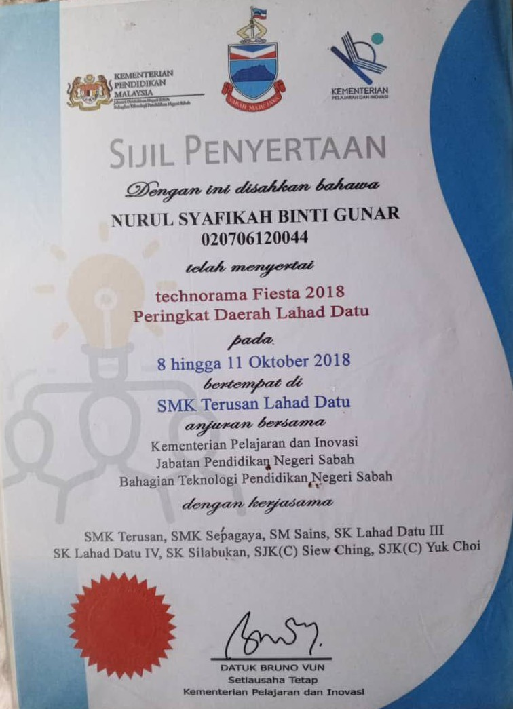
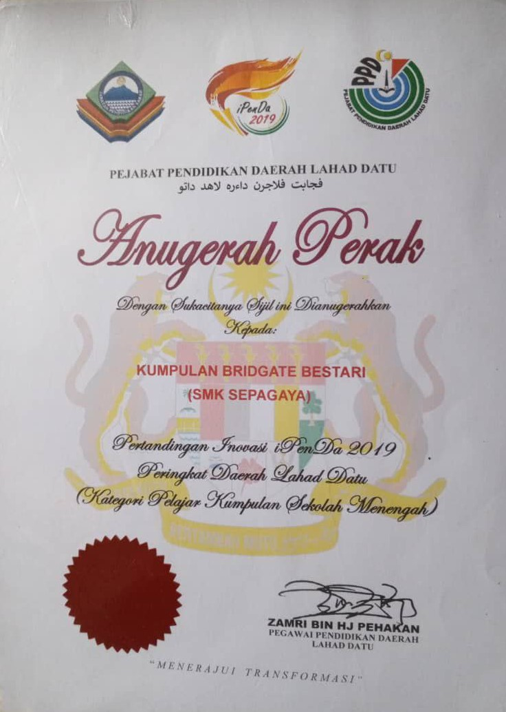
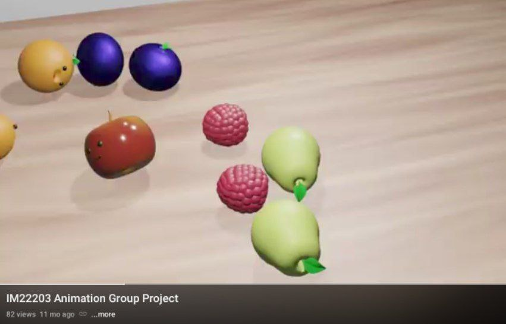

My Projects
| Project Name | Details | Achievement | Certificate | Image |
|---|---|---|---|---|
| Claymation | Technorama Fiesta (2018) - learned claymation production. | None |  |  |
| Sistem Penempahan Bilik APD (SisAPD) | Three members of Bridgate Bestari (SMK Sepagaya) and I participated in an innovation competition, presenting a system designed for booking rooms at the SMK Sepagaya Resource Center for educational purposes. | Silver Award (2019) |  |  |
| Group Project Animation Sem 3 | Created an animated advertisement video for Peel Fresh drink as part of group project. | - | - |  |